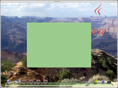
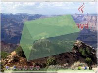
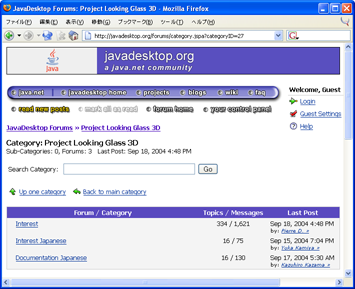
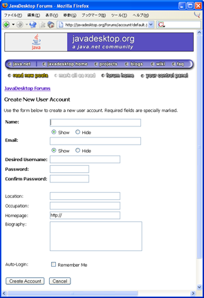

Java ベースの次世代デスクトップ環境
Project Looking Glass の全貌
米 Sun Microsystems
ソフトウェア CTO オフィス，先進開発グループ Project Looking Glass リードエンジニア
川原 英哉 KAWAHARA Hideya
櫻庭 祐一 SAKURABA Yuichi
sakuraba@tk.airnet.ne.jp
http://www5.airnet.ne.jp/sakuraba/java/
初出: Software Design 2004 年 12 月号
今回は，前回 (2004 年 11 月号) に引き続き，Project Looking Glass (以降LG3D) プログラミングについて紹介します． 今回はチュートリアルプログラムを実際に解読していきます． このほか，LG3D プロジェクトの参加方法についても紹介します．
Project Looking Glass 実践編 2
Tutorial1
前回の解説で LG3D のチュートリアルのコードを解読する準備が整いました． それでは，実際にコードを読み解いてみましょう． まず，再度 Tutorial1 のコード (リスト 1) を見てください． Tutorial1 は画面上に薄緑色の四角い箱を表示するプログラムでした． その処理の流れは次のようになっています．
Step 1: ルートコンテナの生成
Step 2: 箱の作成
Step 3: 箱をルートコンテナに追加
Step 4: ルートコンテナの初期化
この流れに沿って，それぞれのステップについて説明していきます．
| リスト 1 Tutorial1 のコード | |
|---|---|
|
■ Step 1: ルートコンテナの生成
まず最初に，この 3D アプリケーションの大元であるルートコンテナとなる Frame3D を作成します．
Frame3D frame3d = new Frame3D(); |
■ Step 2: 箱の作成
次に表示する物を作成します． 今回はアプリケーションの中央に 4 センチ × 3 センチ × 2 センチの箱を配置してみましょう． ここでは，ユーティリティ API で提供されている定義済みの Box クラスを使います． 色は薄緑にしましょう．
LG3D の世界では，デフォルトで 1 単位は 1 メータに相当します． もし画面サイズなどの設定がきちんとされていれば，たとえば長さ 0.02 は画面上ではだいたい 2 センチで表示されます． ただし，遠近法を適用しているため状況により見かけのサイズは変わりますので，あくまでも目安として考えてください．
このほか，簡便に色を指定するたのクラス，SimpleAppearance もユーティリティクラスで提供されています． 引数では色を float で指定し，0 〜 1 の間の値で RGB の順に与えます． もしより高度な設定にご興味のある方は，Appearance や Material といったクラスをご参照ください．
SimpleAppearance app = new SimpleAppearance(0.6f, 0.8f, 0.6f); |
続いて，5 センチ × 4 センチ × 3 センチの箱を作成します． 今しがた作成した薄緑色もコンストラクタの最後の引数で指定します．
Box box = new Box(0.04f,0.03f, 0.02f, app); |
■ Step 3: 箱をルートコンテナに追加
ここで，この box オブジェクトをルートコンテナである frame3dに追加して終わり，といきたいところですが，1 つ覚えておかなくてはいけない制約があります． Frame3D (より厳密には Frame3D の親クラスである Container3D) には，Component3D 以外は追加できません注．
そこでここでは，新たに Component3D オブジェクトを作成して，それにまず box オブジェクトを追加します． ところで，コンテナにチャイルドを追加するメソッドの名前は，AWT では add ですが，LG3D では Java 3D の流れを引継いで addChild となります．
Component3D comp = new Component3D();
comp.addChild(box); |
そして，この Component3D のオブジェクト comp を frame3d に addChildします．
frame3d.addChild(comp); |
■ Step 4: ルートコンテナの初期化
アプリケーションを表示する前にもう少し作業することがあります． まず，どんなアプリケーションでも，表示する前に次のメソッドを呼び出す必要があります． これをし忘れるとアプリケーションに対して操作ができなくなります． 現時点では，これは「おまじない」と思っていてください． そして，もしマウスカーソルがアプリの上に行かないなどの症状に出会ったら，まず次の呼び出しを忘れていないかどうかをチェックしてください．
frame3d.setCapabilities(); |
また，アプリのサイズのヒントも設定しましょう． 現在の 3D シーンマネジャの実装はアプリを 3D 空間に配置する際，このヒントの情報を利用しています．
frame3d.setSize(0.04f, 0.03f, 0.02f); |
Frame3D オブジェクトは生成されても，そのままでは画面に表示されません． シーンマネジャにその存在を知らせる必要があります． 次の呼び出しがそれを行います．
frame3d.setActive(true); |
続いて最後のステップです． シーンマネジャに存在を知らせた後でも，アプリケーションはデフォルトでは非表示の状態にあります． 以下の呼び出しで，これを表示状態に変えます． この呼び出しは setActive()に比べ高速なので，頻繁な非表示/表示の切り替えには通常はこちらを使います．
frame3d.setVisible(true); |
これで図 1 のような薄緑の箱が画面上に見えるはずです． 「ただの四角が見えるだけ？」と思われるかもしれません． たしかに，3D の箱のようにみえるようにするためには，ちょっと回転してみる必要がありそうです． これは次の Tutorial2 でやることにしましょう．
|  |
| 図 1 Tutorial1 の実行結果 |
|---|
{kind=link}
注) これは Container3D がチャイルドのレイアウトの管理に Component3D に特有の情報を利用するこに起因しています．
Tutorial2
Tutorial2 では，薄緑色の箱を回転したり，簡単なユーザフィードバックを加てみます． リスト 2 はオリジナルから若干簡略化した Tutorial2 のコードです． リスト 1 と同様コメントも簡略化しています． おおまかな処理の流れは次のようになります．
Step1: 3Dアプリの初期化
Step2: 箱の回転
Step3: アプリの移動
Step4: アプリのカーソルの設定
Step5: ユーザフィードバックの追加
Step6: ルートコンテナの初期化
以降では，順を追ってそれぞれのステップについて説明していきます．
| リスト 2 Tutorial2 のコード (簡略化後) | |
|---|---|
|
■ Step 1: 3D アプリの初期化
Tutorial1 と同様の手順でアプリを構築していきます． 今回は気分をちょっと変えて色を半透明にしてみましょう． SimpleAppearance のコンストラクタの第 4 引数で透明度 (アルファ) を指定します． 1 が不透明，0 が透明です．
Frame3D frame3d = new Frame3D();
SimpleAppearance app = new SimpleAppearance(0.6f, 0.8f, 0.6f, 0.7f);
Box box = new Box(0.04f, 0.03f, 0.02f, app);
Component3D comp = new Component3D();
comp.addChild(box); |
■ Step 2: 箱の回転
続いて，実際は 3D の箱であることを証明するために箱を少し回転してみましょう． Component3D には手軽に回転をするためのメソッドが提供されています． 最初に回転軸を指定します．
comp.setRotationAxis(1.0f, 0.5f, 0.0f); |
そのあと角度を指定します． デフォルトでは角度はラジアンで指定します． そのままでは扱いづらいので，Math.toRadians() を利用して使い慣れた「度数」で角度を指定してみましょう．
comp.setRotationAngle((float)Math.toRadians(60)); |
これで画面上に表示される形に変化が加わりました．
■ Step 3: アプリケーションの移動
ところで，現状ではアプリケーションはインタラクティブではありません． そこで，便利なユーティリティクラスがあります．
ComponentMover はイベントアクションクラスの一種で，マウスのドラッグに合わせて Component3D を移動します． 利用方法は極めて単純で，動かしたい Component3D オブジェクトをコンストラクタの引数に与えるだけです．
new ComponentMover(comp); |
■ Step 4: アプリケーションのカーソルの設定
動かせるようになったら，次はユーザにそれを知らせるためにカーソルの形を変えてみましょう． ここでは定義済みのカーソルを引数に，対象となっている Component3D の setCursor()メソッドを呼び出します．
comp.setCursor(Cursor3D.MOVE_CURSOR); |
■ Step 5: ユーザフィードバックの追加
最後にイベントアダプタとアクションクラスを利用して簡単なユーザフィードバックを実現してみます．
ここでは MouseEnteredEventAdapter クラスと ScaleAction クラスを組み合わせて，マウスが箱の上に乗ると箱のサイズが少し大きく (1.2 倍に) なるようにしてみましょう． アニメーションの遷移時間は 0.5 秒にしてみました．
new MouseEnteredEventAdapter(comp,
new ScaleAction(comp, 1.2f, 500)); |
■ Step 6: ルートコンテナの初期化
最後に Tutorial1 と同様の手順でルートコンテナを初期化します． 回転したり拡大したりするので，サイズをちょっと大きめに変更しました．
frame3d.addChild(comp);
frame3d.setSize(0.06f, 0.06f, 0.06f);
frame3d.setCapabilities();
frame3d.setActive(true);
frame3d.setVisible(true); |
図 2 に Tutorial2 の実行結果を示します． ユーザーフィードバックの設定などを変えて遊んでみてください． LG3D プロジェクトでは，前回紹介した Tutorial3 のデモ (前回の図7) もありますが，今回はこの解説は省略します． 興味のある方はぜひともコードの解読に挑戦してみてください．
|  |
| 図 2 Tutorial2 の実行結果 |
|---|
{kind=link}
プロジェクトに参加しよう!
中身がわかって興味が出ててくるとプロジェクトに参加してみたくなるのが人情というものではないでしょうか． 読者の方々にもそう思っていただけると大変ありがたいです．
ここでは，プロジェクトに参加するための最初の足がかりであるディスカッションフォーラムへの参加方法を説明します．
日本語コミュニティ、始動
嬉しいことに日本語のディスカッションフォーラムが立ち上がり，多くの興味深い議論が既に行われています． 手始めにこれを覗いてみましょう． LG3D の議論は javadesktop.org のディスカッションフォーラムを利用して行われています． また，議論の内容は同時に ML にも配信され，ML 経由で議論に参加することも可能です．
javadesktop.org のディスカッションフォーラムには，以下の URL でアクセスできます．
http://www.javadesktop.org/forums/
このページから，中ほど「Java Desktop Technologies」のカテゴリ内にある「Project Looking Glass 3D」をクリックしてください (図 3)． 「Interest」「Interest Japanese」「Documentation Japanese」の 3 つのフォーラムがあるのがわかります (図 4)．
「Interest」フォーラムは，英語で LG3D 一般に関する議論をする場です． 「Interest Japanese」は，その日本語版です． プロジェクト初期では，あまりコミュニティや議論を区分けしすぎないほうが良いだろうとの考えで，今のところこのフォーラムでインストレーションの問題の報告から新しい 3D UI の話まで，幅広いトピックをカバーしています．
「Documentation Japanese」は，LG3D ドキュメントの日本語化プロジェクト用のフォーラムです．
今回は，後者2 つについて説明します．
 |
| 図 3 「Project Looking Glass 3D」カテゴリ |
|---|
|  |
| 図 4 「Project Looking Glass 3D」の 3 つのフォーラム |
{kind=link}
日本語で LG3D 一般の議論に参加してみよう
それでは「Interest Japanese」フォーラムをクリックしてみてください． そして，気になるスレッドを追ってみましょう． なかなかおもしろい議論が進んでいるとは思いませんか? さまざまな方々に議論に参加していただいており大変ありがたく思っています．
もし「私はこう思うのだけど」といった考えが浮かんだなら，思い立ったが吉日，さっそく投稿してみましょう． 初心者の方も参加されてますし，フォーラムはとてもフレンドリーな雰囲気ですので，安心して投稿してください．
■投稿の仕方
フォーラムに投稿するには「Guest」のままでもできますが，javadesktop.org のアカウントを作って，名前付きで投稿することをお勧めします． 名前 (ハンドル名/ユーザ名) を覚えてもらうと，後のコミュニケーションが円滑に進みます． アカウントはとても手軽につくれますし，匿名性を保つこともできます．
■ javadesktop.org のアカウント作成
前回，LG3D のソースを入手する際に java.net のアカウントを作成しましたが，javadesktop.org のアカウントはそれとは別物です (ちょっとややこしいですね)．
javadesktop.org アカウントを作るには，まずページ右上の緑の右矢印の横にある「Login」をクリックしてください. 「User Login」のページに切り替わります． ここで下の方にある「Create Account(アカウント作成)」ボタンをクリックすると登録ページが現れます (図 5)．
名前 (Name)，電子メールアドレス (Email)， 希望のユーザ名 (Desired Username)，パスワード (Password) とその確認のための再入力 (Confirm Password) の 5 つが，最低必要な情報です． 好みに応じて，所在地 (Location)， 職業 (Occupation)，Homepage のURL，略歴 (Biography) を入力しても良いでしょう．
名前と電子メールアドレス入力欄の下の「Show」「Hide」のラジオボタンでは，それらの情報を公開する (Show) か非公開にする (Hide) かを設定します． 入力内容を確認して，「Create Account」ボタンをクリックすると，アカウントが作成されます．
「Account Creation Successful」というページが現れればアカウント作成成功です． 「Go to: The mainforums page」をクリックして，メインページに戻り，再度「Interest Japanese」フォーラムに行って投稿に進みましょう．
|  |
| 図 5 javadesktop.org のアカウント登録画面 |
|---|
{kind=link}
投稿してみよう
投稿するには，フォーラムのメッセージ一覧を表示しているページにある「Post New Topic」をクリックします．
また，返信をするには，返信したい文面の右上にある「Reply」ボタンをクリックします． すると「Post Message: 」と書かれたページに切り替わり，そこには「Message:」と題されたテキスト入力エリアと，返信の場合にはその下に返信する元の文面が表示されます．
テキスト入力エリアにメッセージを書き込んだら，「Preview」をクリックして，プレビューを確認しましょう． 「Message Preview:」というページに切り替わり，入力した内容が灰色の四角の中に表示されているはずです．
もしこれで OK ならば「Post Message」ボタンを，前の画面に戻って編集し直したいのであれば「Go Back/Edit」ボタンをクリックしてください．
投稿できましたか? おめでとうございます． これであなたもLG3Dコミュニティの一員です!
ドキュメントの日本語化プロジェクトに参加しよう
「Documentation Japanese」は，LG3D の英語版ドキュメントの日本語化作業用のフォーラムです． 手始めに「翻訳プロジェクトの現状報告と、新規翻訳者の募集」と題したスレッド (http://www.javadesktop.org/forums/thread.jspa?threadID=4733) を読むと，作業の進め方の雰囲気が伝わってくるのではないかと思います．
メンバが精力的に作業を進めていますので「作業に参加してもいい」という方がいらっしゃったら，ぜひとも手を上げて（フォーラムにその旨投稿して）ください!
さらに先に進むには
プロジェクトへのコードの貢献をするにはどうしたら良いのでしょうか． コードの貢献には，大きく分けて2 種類あります． 1 つ目は，LG3D 上で動くプログラムの開発，他方は LG3D コア API とその実装への参加です． いずれの場合も，英語でのコミュニケーションが若干必要になります．
■ LG3D 上で動くプログラムの開発
開発した LG3D プログラムを共有する場として，lg3d-incubator サブプロジェクトがあります（https://lg3d-incubator.dev.java.net/)． 「3D ブラウザ」や「ピンポン」といったアプリケーションの開発が進んでいます． それらの開発に参加してみても良いですし，ご自分で新たにプロジェクトをはじめても良いでしょう．
いずれの場合も「Interest」フォーラムに，簡単な英語で結構ですので，その旨ご一報ください． その後の進め方などをご連絡いたします．
■ LG3D コアAPI とその実装への参加
コア API とその実装への貢献にはコアチームとの技術内容の議論が不可欠であり，どうしても英語でのコミュニケーション能力が必要になってきます． ただし，きちんとしたコードが書ければ，多少まちがえている英語でも何とかなります． 手始めに「Interest」フォーラムで英語での議論に慣れるのが良いかと思います． 覗いてみると，色々な国の人が議論に参加しているのがおわかりになると思います．
以上，コードの貢献の仕方を簡単に説明しました． 我こそは，と思われる方は，ぜひとも勇気を出して参加してみてください． 諸外国のエンジニアとの共同作業を経験できる素晴らしい機会です． なお，貢献への詳しい手順に関しては，参考 URL をご覧ください．
最後に
以上，基礎編，実践編 1, 2 の 3 回に渡って，LG3D の開発の経緯から，インストール，プログラミング，そしてコミュニティへの参加方法と，欲張りな内容を幅広くカバーしました．読者の皆さんには楽しんでいただけたでしょうか．
LG3D は米国発の技術ではありますが，その発起人が日本人であり，また日本のコミュニティの活動も盛んです． 今後益々日本人の貢献者が増え，日本が得意とする感性に訴えかける作り込みの技を，LG3D コミュニティを通して大いに世界に発信できれば，との密かな野望を胸に，本稿を終わりたいと思います．
皆さんのプロジェクトへのご参加を心よりお待ちしております．
参考URL
Contributing to Project Looking Glass https://lg3d.dev.java.net/contribute.html